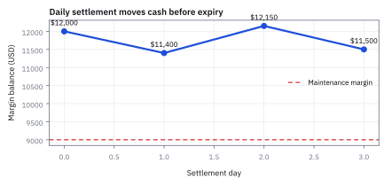
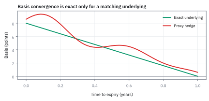
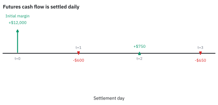
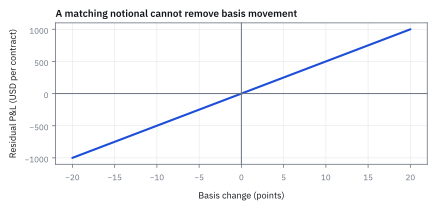

19.2 Marking-to-Market, Margin, and Basis Risk
futures ไม่ใช่ forward เพราะกำไรขาดทุนถูกย้ายผ่านบัญชีทุกวัน
คุณ long สัญญา ES 1 สัญญา จุดละ \$50 วางเงินประกันไว้ \$12,000 โดยต้องไม่ต่ำกว่า 9,000 วันนี้ราคาปิดลง 12 จุด คืนนี้ต้องจ่ายเท่าไร และถ้าพรุ่งนี้ลงอีก 50 จุด ต้องเติมเงินเท่าไร?
เฉลย: คืนนี้เสีย 12 × 50 = \$600 บัญชีเหลือ 11,400 ถ้าพรุ่งนี้ลงอีก 50 จุด เสียอีก 2,500 เหลือ 8,900 ต่ำกว่า 9,000 ต้องเติมกลับถึง 12,000 คือ \$3,100 ทันที ทั้งที่ยังไม่ได้ขายอะไรเลย futures เก็บค่าตอนจบของทุกวัน ไม่รอวันหมดอายุ
ศัพท์ที่ต้องใช้ก่อนเริ่ม
- mark-to-market
- การปรับมูลค่า position ตาม settlement price ของวันนี้แล้วโอนกำไรขาดทุนเป็นเงินสด ใช้ทำให้ futures exposure ถูกชำระทุกวันแทนการรอ expiry
- margin
- เงินหลักประกันที่กันไว้รองรับการขาดทุนของสัญญา ไม่ใช่ราคาซื้อ underlying ใช้ลดความเสี่ยงที่คู่สัญญาจะผิดนัด
- initial margin
- เงินหลักประกันเริ่มต้นที่ต้องวางตอนเปิด futures position ใช้เป็น buffer ก่อนบัญชีจะถูกตรวจ maintenance margin
- maintenance margin
- ระดับเงินขั้นต่ำที่ต้องคงไว้ในบัญชี margin ใช้เป็น trigger ให้เติมเงินเมื่อยอดต่ำกว่าระดับนี้
- variation margin
- เงินสดที่โอนเข้าออกตาม daily P&L หลัง mark-to-market ใช้ชำระกำไรขาดทุนของ futures ในแต่ละวัน
- basis
- ส่วนต่างระหว่างราคาของสินทรัพย์ที่ hedge กับราคาของ futures ที่ใช้ hedge ใช้วัดว่าคู่ hedge เคลื่อนที่ไม่ตรงกันแค่ไหน
- basis risk
- ความเสี่ยงที่ basis เปลี่ยนจน hedge ไม่ชดเชย exposure ได้พอดี ใช้ประเมิน residual P&L ที่ยังเหลือหลังเปิด hedge
- settlement price
- ราคาที่ตลาดกลางประกาศเพื่อคำนวณ daily P&L และ margin ใช้เป็นราคากลางทางบัญชี ไม่จำเป็นต้องเท่ากับราคาซื้อขายทุกคำสั่ง
- forward
- สัญญาที่คู่สัญญาตกลงกันเองและมักชำระสุทธิครั้งเดียวเมื่อถึง expiry ใช้เทียบให้เห็นว่าการชำระทุกวันเปลี่ยน cash-flow อย่างไร
- futures
- สัญญามาตรฐานในตลาดกลางที่มี daily settlement และ margin ใช้รับหรือ hedge exposure ด้วยกติกาเดียวกันสำหรับผู้เข้าตลาด
- expiry
- วันสิ้นสุดของสัญญา ใช้กำหนดจุดที่การ hedge หรือ basis ต้องถูกปิดและชำระตามกติกาของ contract
- long
- position ที่ได้ประโยชน์เมื่อราคาขึ้น ใช้รับ exposure บวกของ underlying หรือ futures
- leverage
- การควบคุม notional ที่ใหญ่กว่าเงินสดที่วางไว้ ใช้ขยาย exposure แต่เพิ่มความไวต่อ margin call
- beta
- ความไวของสินทรัพย์ต่อ market return ใช้แยก price movement ที่ hedge ได้ออกจาก basis movement
- liquidity
- ความสามารถในการหาเงินสดหรือซื้อขายโดยไม่กระทบราคามาก ใช้ประเมินว่ารับ daily settlement และ margin call ได้หรือไม่
- clearinghouse
- ตัวกลางที่ยืนคั่นระหว่างผู้ซื้อและผู้ขายเพื่อการันตีการชำระราคาและตัดโอนกำไรขาดทุนทุกเย็น ใช้ขจัด credit risk ของคู่สัญญา
- novation
- กลไกที่ตัวกลางเข้ามาเป็นคู่สัญญาทางกฎหมายแทนคู่เทรดเดิมในทันทีที่คำสั่งจับคู่สำเร็จ ใช้ตัดความผูกพันโดยตรงระหว่างผู้ซื้อกับผู้ขาย
สัญกรณ์และหน่วย
| สัญลักษณ์ | ความหมาย | หน่วย |
|---|---|---|
| $F_t$ | futures settlement price ณ วัน $t$ | จุด |
| $M$ | ตัวคูณของ ES ที่แปลงจุดเป็น USD | USD ต่อจุดต่อสัญญา |
| $N$ | จำนวน futures contracts ที่ถือ | สัญญา |
| $V_t$ | ยอดเงินใน margin account หลัง settlement ของวัน $t$ | USD |
| $B_t$ | basis ของ hedge asset และ futures ณ วัน $t$ | จุดหรือ USD ต่อหน่วย |
| $S_t$ | ราคาของ asset ที่ถูก hedge ณ วัน $t$ | USD ต่อหน่วยหรือจุด |
| $T$ | เวลาจากวันเปิด position ถึง expiry | ปี |
| $Q$ | ขนาดของที่ถือ คิดเป็น USD ต่อการขยับ 1 index point | USD ต่อจุด |
| $u,\ d,\ R$ | ตัวคูณขาขึ้น ขาลง และตัวคูณเงินฝากต่องวด ใน binomial | unitless |
| $q$ | ความน่าจะเป็นแบบ risk-neutral ของขาขึ้น | unitless |
| $G_0$ | ราคา forward ที่ตกลงวันนี้ | USD |
ที่มาที่ไป: ระบบที่ป้องกันการล้มลูกโซ่ แต่สร้างความเสี่ยงใหม่
ตลาดล่วงหน้าเจอปัญหาว่าถ้ารอชำระเงินตอนครบกำหนด ฝ่ายที่ขาดทุนอาจหนีหายไปก่อน
ทางแก้ที่สำนักหักบัญชีใช้คือคำนวณกำไรขาดทุนใหม่ทุกวัน แล้วโอนเงินกันจริงทุกวัน ซึ่งลดการสะสม exposure ระหว่างคู่สัญญา แต่ยังอาจมีขาดทุนจากการกระโดดของราคาและการเติม margin ไม่ทัน
ระบบนี้ป้องกันการล้มลูกโซ่ได้ดีมาก แต่สร้างความเสี่ยงใหม่ที่หลายคนมองข้าม
คือถ้าเราใช้สัญญาล่วงหน้าป้องกันความเสี่ยงของสินทรัพย์ที่ไม่ได้คำนวณใหม่ทุกวัน ขาที่ขาดทุนจะเรียกเงินสดจากเราทันที ส่วนขาที่กำไรยังไม่ให้เงิน กองทุนที่มีมุมมองถูกต้องจึงล้มเพราะขาดเงินสดได้ ซึ่งเกิดขึ้นจริงมาแล้วหลายครั้ง
ทำไมตลาดสถาบันจึงใช้ futures เป็นศูนย์กลางสภาพคล่อง
ในทางปฏิบัติ ดัชนีหุ้นอย่าง S&P 500 ประกอบด้วยหุ้น 500 บริษัท การเข้าซื้อหรือขายตะกร้าหุ้นจริงทั้งหมดต้องใช้เงินทุนมหาศาลและเจอกับค่าธรรมเนียมการซื้อขายรายตัว
ตลาดการเงินจึงพัฒนาสัญญา futures บนดัชนีอย่าง E-mini S&P 500 (ES) ขึ้นมาเป็นเครื่องมือหลัก เพราะมีสภาพคล่องสูงมาก เปิดสถานะ short ได้ง่ายโดยไม่ต้องยืมหุ้นจริง และใช้เงินวางหลักประกันเพียงสัดส่วนเล็กน้อย
จุดกำเนิดทางประวัติศาสตร์: จากวิกฤตเบี้ยวสัญญาข้าวโพดสู่ระบบ Clearinghouse
ในทศวรรษ 1840 พ่อค้าและชาวนาในแถบมิดเวสต์ของสหรัฐฯ รวมตัวกันตั้ง ตลาดสินค้าเกษตร Chicago Board of Trade ขึ้นมาเพื่อซื้อขายสัญญา forward สินค้าเกษตรล่วงหน้า เช่น ข้าวโพดและข้าวสาลี
ปัญหาใหญ่ที่ไม่มีใครแก้ได้ในเวลานั้นคือ การเบี้ยวสัญญา เมื่อราคาข้าวโพดในตลาดร่วงลงครึ่งหนึ่ง พ่อค้าคนซื้อก็แอบหนีหายไป หรือถ้าพุ่งขึ้นเท่าตัว ชาวนาก็แอบเอาข้าวโพดไปขายให้คนอื่นแทน วงการการค้าจึงเต็มไปด้วยคดีความและการล้มละลาย
ปี 1865 ตลาดจึงออกกติกาสัญญามาตรฐาน และบังคับให้ทั้งสองฝ่ายวางเงินประกัน ต่อมาจึงพัฒนาเป็นระบบ clearinghouse ที่รับเป็นคู่สัญญากลางผ่าน novation เต็มรูปแบบ ซึ่ง Chicago Board of Trade ตั้งขึ้นในปี 1925 โดย clearinghouse เข้ามาเป็นผู้ซื้อให้กับผู้ขายทุกคน และเป็นผู้ขายให้กับผู้ซื้อทุกคน
เพื่อไม่ให้ clearinghouse ต้องแบกรับความเสี่ยง จึงเกิดกติกา marking-to-market และ margin ขึ้นมา: ทุกสิ้นวัน ทุกสัญญาจะถูกปิดและคำนวณราคาใหม่ ใครขาดทุนต้องจ่ายเงินสดทันที และทุกคนต้องวางเงินประกันไว้ก้อนหนึ่ง
การออกแบบนี้กำจัดความเสี่ยงคู่สัญญา หรือ counterparty credit risk ได้อย่างเด็ดขาด แต่สิ่งที่เข้ามาแทนที่คือ liquidity risk เพราะถ้าวันไหนราคาเหวี่ยงแรงแล้วคุณหาเงินสดมาเติมไม่ทันกำหนด บัญชีจะถูกบังคับปิดทันที แม้ว่าอีกสามเดือนข้างหน้าราคาจะกลับมาถูกทางก็ตาม
จากคำมั่นตอนจบสู่เงินสดระหว่างทาง
เริ่มจากคำมั่นง่าย ๆ: วันนี้ตกลงราคาของสิ่งหนึ่งไว้ แต่ทุกเย็นเทียบราคาตลาดใหม่ แล้วคนที่เสียต้องโอนส่วนต่างก่อนนอน นี่แยก “สัญญาว่าจะส่งมอบเมื่อครบอายุ” ออกจาก “เงินสดที่ย้ายระหว่างทาง”
ในเชิงทฤษฎีการเงิน สัญญา futures คือหลักทรัพย์ที่มีมูลค่าสัญญาเป็นศูนย์เสมอ แต่จ่ายกระแสเงินสดหรือเงินปันผลสังเคราะห์เท่ากับส่วนต่างราคาปิดในแต่ละวัน
ความเข้าใจผิดที่พบบ่อยมากคือคิดว่าราคาบนจอ $F_t$ คือราคาที่ต้องจ่ายซื้อสัญญา ความจริงคือการเปิดสถานะ futures มีต้นทุนเข้าทำสัญญาเป็นศูนย์ สิ่งที่ต้องจ่ายมีเพียงเงินหลักประกัน margin เท่านั้น
ตัวอย่างใช้ E-mini S&P 500 futures หรือ ES ซึ่งเป็นสัญญามาตรฐานที่อิงดัชนีหุ้นสหรัฐฯ การขยับ 1 index point มีมูลค่า $M=50$ USD ต่อสัญญา นี่คือ multiplier ที่แปลงจุดบนจอเป็นเงินจริง
ถ้าถือ $N$ สัญญาและ settlement เปลี่ยนจากเมื่อวาน กำไรขาดทุนถูกโอนวันนี้ ไม่ได้รอ expiry กลไกนี้เรียกว่า mark-to-market ส่วน margin คือเงินกันชนสำหรับการโอน ไม่ใช่ราคาซื้อของทั้งก้อน
ขั้นที่ 1 — นิยามของกำไรขาดทุนรายวันของ futures
บรรทัดนี้เป็น นิยาม ตามกติกาของตลาด ไม่ใช่ผลที่พิสูจน์ ต่างจาก forward ตรงที่ futures ชำระส่วนต่างทุกวัน ไม่ได้รอถึงวันส่งมอบ สามก้อนที่คูณกันคือจำนวนสัญญา มูลค่าต่อจุดต่อสัญญาซึ่งตลาดกำหนด และจำนวนจุดที่ราคาปิดขยับในวันนั้น ผลคือเงินจริงที่เข้าหรือออกจากบัญชีในวันนั้นเลย ความต่างนี้สำคัญ เพราะมันแปลว่าต้องมีเงินสดพร้อมทุกวัน ไม่ใช่แค่ตอนจบ
เริ่มจากมูลค่าสัญญาในมือเมื่อวาน คือจำนวนสัญญาคูณตัวคูณดัชนีและคูณระดับราคาปิดเดิม
เทียบกับมูลค่าสัญญาในมือวันนี้ที่ระดับราคาปิดใหม่ ตัวคูณและจำนวนสัญญาเป็นค่าเดิมจึงดึงออกมาได้
ผลต่างของสองก้อนนี้คือกำไรขาดทุนประจำวัน หรือ daily P&L ที่ต้องตัดจ่ายเป็นเงินสดทันที
เครื่องหมายลบของ $F_{t-1}$ บอกว่าราคาตั้งต้นคือต้นทุนของวัน ถ้าราคาปิดวันนี้ $F_t$ สูงกว่า กำไรจะเป็นบวกสำหรับขา long
Worked Example — ลง 12 จุด ต้องหาเงินสดเท่าไรวันนี้
ถาม: long ES 1 สัญญา แล้ว settlement ลดจาก 5,000 เป็น 4,988 จุด บัญชีขาดทุนเท่าไรและเหลือ margin เท่าไร?
ของที่มี: จำนวนสัญญา $N=1$, multiplier $M=50$ USD ต่อจุด, การเปลี่ยนราคา -12 จุด, initial margin \$12,000 และ maintenance margin \$9,000 ทุกตัวเลขเป็น USD และยังไม่รวม commission
ยอด initial margin และ maintenance margin เป็นตัวเลขสมมติสำหรับฝึกบัญชี ไม่ใช่อัตราปัจจุบันของตลาดหรือ broker
บัญชีตัวอย่างหลัง daily mark-to-market
| วัน | $F_t$ (จุด) | $F_t-F_{t-1}$ | Daily P&L (USD) | Margin balance (USD) |
|---|---|---|---|---|
| เปิด | 5,000 | — | — | 12,000 |
| 1 | 4,988 | -12 | -600 | 11,400 |
| 2 | 5,003 | +15 | +750 | 12,150 |
| 3 | 4,990 | -13 | -650 | 11,500 |
คำนวณด้วย $M=50$ USD ต่อจุดและ $N=1$ สัญญา; ยอด margin รวม daily P&L สะสม แต่ notional ของ ES ไม่ได้ถูกจ่ายเต็มจำนวน
ขั้นที่ 2 — ตรวจตัวเลขวันแรก
ขั้นที่ 1 คูณการเปลี่ยน -12 จุดด้วย \$50 ต่อจุด ขั้นที่ 2 นำขาดทุนไปหักจาก margin balance เหตุผลที่แยกสองขั้นคือ P&L กับยอดเงินคงเหลือไม่ใช่ตัวเดียวกัน
หาระยะห่างของราคาปิดวันแรกกับราคาตั้งต้น ได้การขยับลง 12 จุด
นำ 12 จุดคูณตัวคูณ \$50 ต่อจุดของสัญญา ES หนึ่งสัญญา ได้ขาดทุน \$600 ในวันแรก
นำยอดขาดทุนไปหักออกจากเงินวางเริ่มแรก \$12,000 บัญชีเหลือ \$11,400 ซึ่งยังสูงกว่าเกณฑ์ maintenance margin \$9,000 จึงยังไม่ต้องเติมเงิน
แล้วเอาไปใช้ทำอะไรได้จริงบ้าง
การรู้ว่าเงินไหลเข้าออกทุกวันอย่างไร เป็นเรื่องที่ทำให้กองทุนล้มได้ทั้งที่มุมมองถูก
ใช้วางแผนสภาพคล่อง เพราะสัญญาล่วงหน้าเรียกเงินเพิ่มทุกวันตามราคาที่ขยับ
ใช้เข้าใจว่าทำไมการป้องกันความเสี่ยงที่ถูกทิศ ยังทำให้ขาดเงินสดได้ เพราะขาที่ขาดทุนต้องจ่ายเงินก่อน ขาที่กำไรยังไม่ได้เงิน
ใช้ประเมินความเสี่ยงจากการที่สิ่งที่ใช้ป้องกันไม่ตรงกับสิ่งที่ต้องการป้องกันเป๊ะ ๆ
Figure 19.2a — เส้นทาง margin ของ ES

margin balance ลดลงตามวันที่ขาดทุนและเพิ่มขึ้นเมื่อ futures ฟื้น; ในตัวอย่างนี้ยอดต่ำสุด \$11,400 ยังไม่แตะ maintenance margin \$9,000 จึงยังไม่เกิด margin call
ลองต่ออีกวัน: ราคากลับมา แต่เงินต้องพร้อมก่อน
ใช้ long หนึ่งสัญญาและ multiplier \$50 ต่อจุดจากตัวอย่างเดิม วันแรกเสีย \$600 ถ้าวันถัดไปราคากลับ 5,000 ก็ได้ 600 คืน รวมสองวันเป็นศูนย์ แต่ต้องมีเงินจ่ายในวันแรก
อีกเส้นทางหนึ่งคือวันที่สองลงต่อถึง 4,938 ยอดเหลือ 8,900 ต่ำกว่า maintenance 9,000 ภายใต้กติกาตัวอย่างที่เรียกเติมกลับ initial margin 12,000 ต้องเติม 3,100 ไม่ใช่เพียง 100 ที่ขาดจาก maintenance เงินเติมเป็นการย้ายเงินเข้าหลักประกัน ไม่ใช่ขาดทุนเพิ่มอีกครั้ง
ตัวเลขหลักประกันเป็นสมมติฐานการสอน กติกาจริงขึ้นกับสัญญาและ broker สูตรกำไรขาดทุนยังคงคำนวณจากราคาและ multiplier เหมือนเดิม
ทำไม futures ไม่เหมือน forward
ลองเทียบการยืมเงินที่เคลียร์บัญชีวันสุดท้าย กับการหารค่าอาหารทุกเย็น เงินรวมอาจใกล้กัน แต่คนที่ต้องจ่ายก่อนย่อมต้องหาเงินสดก่อน
ในแบบจำลอง binomial สัญญา futures มีราคาเท่ากับราคา forward เมื่ออัตราดอกเบี้ยคงที่ ขั้นถัดไปแสดงที่มาด้วยตัวเลขหนึ่งงวด
แต่เมื่ออัตราดอกเบี้ยในตลาดสุ่มและเคลื่อนไหวไปพร้อมกับราคาสินทรัพย์ หากราคาสินทรัพย์กับดอกเบี้ยมีความสัมพันธ์ทางบวก ราคา futures จะสูงกว่า forward เสมอ
เหตุผลคือเมื่อราคาสินทรัพย์ขึ้น ขา long ได้รับกระแสเงินสดทันทีและนำไปฝากต่อในอัตราดอกเบี้ยที่กำลังสูงขึ้น ส่วนเมื่อราคาสินทรัพย์ลง ขาดทุนจะเกิดขึ้นในจังหวะที่ดอกเบี้ยเงินกู้ต่ำลง ทำให้ต้นทุนการกู้เงินมาจ่าย margin ต่ำลงตามไปด้วย
ราคา futures ใน binomial หนึ่งงวด: ทำไมเท่ากับ forward
futures เข้าฟรีและจ่ายส่วนต่าง F₁ − F₀ ตอนสิ้นงวด ของที่เข้าฟรีต้องมีมูลค่าศูนย์ เงื่อนไขนี้ข้อเดียวบอกราคา futures ได้ ลองกับหุ้น \$100 ที่งวดหน้าขึ้นเป็น 110 หรือลงเป็น 90 และเงินฝากโตงวดละ 2%
เงินที่จ่ายตอนสิ้นงวดคิดลดด้วย R แล้วหาค่าเฉลี่ยใต้ความน่าจะเป็นแบบ risk-neutral ต้องได้ศูนย์ ตอนหมดอายุราคา futures ต้องเท่ากับ spot จึงได้ว่าราคา futures วันนี้คือค่าเฉลี่ยแบบ risk-neutral ของราคาหุ้นงวดหน้า
ด้วยตัวเลขของเรา q = 0.6 ได้ F₀ = 102 เท่ากับราคา forward S₀R = 102 ของหัวข้อ 19.1 พอดี หลายงวดก็ใช้เหตุผลเดิมทีละงวด ได้ F_t เป็นค่าเฉลี่ยของ F_(t+1) หรือ martingale ใต้ Q เงินปันผลเข้ามาทาง q
futures เท่ากับ forward เพราะดอกเบี้ยคงที่ ถ้าดอกเบี้ยสุ่มและขึ้นพร้อมราคาสินทรัพย์ ขา long ได้เงินตอนดอกเบี้ยสูงไปฝาก และเสียเงินตอนดอกเบี้ยต่ำ futures จึงแพงกว่า forward เล็กน้อย
ที่มาของผลรวม P&L: อนุกรม telescoping และ convergence ของ basis สู่ศูนย์
การคำนวณนี้ตอบคำถามที่หลายคนสงสัย: ถ้า futures เก็บเงินทุกวัน ทำไมผลตอบแทนปลายทางจึงเทียบเคียงกับ forward ได้
ความลับอยู่ที่โครงสร้างพีชคณิตแบบ telescoping sum ซึ่งทำให้ผลต่างระหว่างวันตัดกันไปหมด เหลือเพียงราคาเริ่มแรกกับราคาสุดท้าย
และที่วันครบกำหนด $T$ กลไก arbitrage จะบีบให้ราคา futures เกิด convergence สู่ราคา spot พอดี ($F_T = S_T$) ทำให้ basis กลายเป็นศูนย์
ข้อแตกต่างเดียวที่เหลืออยู่คือเวลาของการไหลของเงินสด (cash timing) ซึ่งสร้างความต้องการเงินทุนหมวนเวียนและทำให้ดอกเบี้ยมีผลต่อมูลค่าสัญญา
บวกกำไรขาดทุนรายวันตั้งแต่ต้นจนถึงวันครบกำหนดเข้าด้วยกัน ดึงตัวคูณและจำนวนสัญญาออกนอกผลรวม
พจน์ข้างในจะตัดกันเป็นคู่ หัวขบวนของวันก่อนจะหักกับท้ายขบวนของวันถัดไป เหลือเพียงราคาสุดท้ายลบราคาเริ่มต้น นี่คือคุณสมบัติ telescoping sum
ในวันครบกำหนด ราคา futures ต้องเท่ากับ spot เสมอ มิฉะนั้นจะเกิด arbitrage โดยซื้อของถูกและส่งมอบของแพงทันที
ผลรวมเงินสดที่ได้รายวันจึงเท่ากับผลตอบแทนของ forward พอดี หากไม่คิดดอกเบี้ยของการหมุนเวียนเงินระหว่างทาง ตรวจกับตารางสามวัน −600 + 750 − 650 = −500 เท่ากับ 50 × (4,990 − 5,000) ตรงกัน
แต่ถ้าดอกเบี้ยเคลื่อนไหว การได้รับเงินเร็วย่อมนำไป reinvest ได้ดอกเบี้ยเพิ่ม ทำให้มูลค่าจริงเบี่ยงเบนจาก forward เล็กน้อย
ขั้นที่ 3 — basis และ P&L ที่ hedge ไม่ได้
ถ้าของที่ถือไม่ใช่ตัวเดียวกับที่สัญญาอ้างอิง ให้แยกการขยับออกเป็นสองส่วน ขั้นนี้เป็นพีชคณิตล้วน แต่ผลของมันคือการแยกความเสี่ยงที่จัดการได้ ออกจากความเสี่ยงที่จัดการไม่ได้ ซึ่งเป็นสิ่งแรกที่ต้องรู้ก่อนสัญญาว่าจะ hedge ให้
นิยามส่วนต่างระหว่างของที่ถือจริงกับสัญญาที่ใช้ hedge แล้วหาผลต่างของมันในหนึ่งวัน
เขียนกำไรขาดทุนของพอร์ตที่ hedge แล้ว คือขาของจริงบวกขาสัญญาที่ทิศตรงข้าม จากนั้นแทนการขยับของของจริงด้วยส่วนต่างบวกการขยับของสัญญา แล้วจัดกลุ่มใหม่ตามตัวที่คูณอยู่
การจัดกลุ่มนั้นคือทั้งหมดของขั้นนี้ เพราะมันแยกความเสี่ยงออกเป็นสองชนิดที่จัดการคนละแบบ
ก้อนแรกคือความเสี่ยงที่ hedge ไม่ได้เลย ไม่ว่าจะเลือกขนาดเท่าไร เพราะมันคือส่วนที่ของจริงกับสัญญาเดินไม่ตรงกัน ส่วนก้อนที่สองหายได้ถ้าเลือกขนาดให้พอดี ซึ่งเป็นงานของขั้นถัดไป
ลองตัวเลข พอร์ต \$250,000 ที่เดินตามดัชนี คิดเป็น \$50 ต่อจุด hedge ด้วย short ES 1 สัญญา วันหนึ่ง futures ลง 40 จุด แต่พอร์ตลง 42 จุด ถ้าไม่ hedge เสีย \$2,100 เมื่อ hedge แล้วเหลือเสีย \$100 ซึ่งคือ basis 2 จุดคูณ 50 ส่วนนี้ hedge ไม่ได้
Figure 19.2b — basis ควรแคบลงเมื่อเข้า expiry

กรณี hedge asset ตรงกับ underlying basis เข้าใกล้ศูนย์เมื่อ expiry; แต่ถ้าใช้ proxy เช่น SPY กับ ES เส้นจริงอาจไม่แตะศูนย์ เพราะ dividend, tracking และเวลาชำระไม่ตรงกัน
ขั้นที่ 4 — คำนวณขนาด hedge ที่ทำให้พจน์ความเสี่ยงตลาดเป็นศูนย์
บรรทัดนี้เป็น นิยาม ของขนาดที่เราเลือก ซึ่งมาจากการตั้งพจน์ที่สองในขั้นที่ 3 ให้เป็นศูนย์ ตัวเศษคือมูลค่าเงินที่ต้องการ hedge ส่วนตัวส่วนคือมูลค่าของสัญญาหนึ่งฉบับ หารแล้วได้จำนวนฉบับ ข้อควรระวังเรื่องสัญลักษณ์: ตัวแปรในสมการของขั้นที่ 3 หมายถึงจำนวนหน่วยของสินทรัพย์ที่คูณกับการขยับของราคา ไม่ใช่มูลค่าเงิน สองอย่างนี้ต่างกัน และการสับสนตรงนี้ทำให้ขนาด hedge ผิดเป็นเท่าตัว ส่วนทิศทางเลือกให้สวนกับความเสี่ยงที่มี แล้วยังต้องตรวจ beta และ basis เพิ่มอีก
ตั้งเป้าหมายให้ความเสี่ยงตลาดหายไปโดยบังคับให้ผลต่างของขนาดถือครองสุทธิเป็นศูนย์
แปลงจำนวนหน่วยสินทรัพย์ $Q$ ให้อยู่ในรูปมูลค่าเงินพอร์ต หารด้วยราคาต่อหน่วย
จับสองสมการเท่ากันเพื่อให้สัญญา futures มีขนาด notional เท่ากับพอร์ตที่ถืออยู่
ใช้ข้อเท็จจริงว่าก่อนครบกำหนด basis มักมีขนาดเล็กมากเมื่อเทียบกับราคา ทำให้ราคา spot กับ futures ใกล้เคียงกัน
แก้หาจำนวนสัญญา $N^*$ โดยหารมูลค่าพอร์ตด้วยมูลค่าของสัญญา futures หนึ่งฉบับ
Figure 19.2c — daily settlement เปลี่ยน cash timing

forward รอชำระก้อนเดียวเมื่อ expiry แต่ futures ย้ายกำไรขาดทุนเป็นเงินสดทุกวัน; cash timing นี้ทำให้การวางแผน liquidity เป็นส่วนหนึ่งของการ hedge ไม่ใช่งานหลังบ้าน
กับดัก: margin ต่ำไม่เท่ากับขาดทุนเต็ม notional
margin เป็น buffer ไม่ใช่ราคาที่จำกัดการขาดทุน และ broker อาจเปลี่ยน house requirement หรือ liquidate เมื่อเติมเงินไม่ทัน การเห็นว่าบัญชียังอยู่เหนือ maintenance margin จึงไม่ใช่ใบอนุญาตเพิ่ม leverage; ตลาดไม่สนใจว่า spreadsheet ของเรายังมีพื้นที่ว่าง มันสนใจว่ามีเงินสดส่งวันนี้หรือไม่
ข้อจำกัด: วิธีนี้สมมติอะไร และของจริงเป็นอย่างไร
| เรื่อง | วิธีนี้สมมติว่า | ของจริงเป็นอย่างไร | ผลที่ตามมาเวลาใช้งาน |
|---|---|---|---|
| ความตรงกัน | สิ่งที่ใช้ป้องกันเคลื่อนไหวตามของจริง | มันเคลื่อนไหวไม่ตรงกันเป๊ะ | ยังเหลือความเสี่ยงที่ป้องกันไม่ได้ และบางครั้งใหญ่กว่าที่คิด |
| สภาพคล่อง | มีเงินสดพอจ่ายเงินประกันเพิ่ม | ถูกเรียกเงินพอดีตอนที่ทุกอย่างแย่ | อาจถูกบังคับปิดสถานะในจังหวะที่แย่ที่สุด ทั้งที่มุมมองถูก |
| การจับคู่เวลา | ทั้งสองขารับรู้กำไรขาดทุนพร้อมกัน | ขาหนึ่งรับรู้ทุกวัน อีกขารับรู้ตอนจบ | งบการเงินเหวี่ยงแรงทั้งที่ความเสี่ยงจริงถูกป้องกันแล้ว |
แถวกลางเป็นสาเหตุที่กองทุนที่มีมุมมองถูกต้องยังล้มได้ ซึ่งเกิดขึ้นจริงหลายครั้งในประวัติศาสตร์
Figure 19.2d — residual P&L จาก basis risk

เมื่อ hedge asset เคลื่อนที่ต่างจาก futures มากขึ้น residual P&L จะกระจายกว้างขึ้น แม้ notional hedge จะดูพอดี; เส้นนี้เป็นภาพจำลองเชิงกลไก ไม่ใช่สถิติของ SPY หรือ ES
คำตอบ — ลง 12 จุด ต้องหาเงินสดเท่าไรวันนี้
คำถาม: ถือ long ES จำนวน 1 สัญญา แล้ว settlement ลดลงจาก 5,000 จุด เหลือ 4,988 จุด บัญชีขาดทุนเท่าไร และยอดเงิน margin เหลือเท่าไร?
ของที่มี: ขั้นที่ 1 และ 2 กับจำนวนสัญญา 1 สัญญา multiplier \$50 ต่อจุด การลดลง 12 จุด initial margin \$12,000 และ maintenance margin \$9,000
1 บัญชีขาดทุนรายวัน 12 × 50 = \$600 ทันที
2 ยอดเงินในบัญชี margin เหลือ 12,000 − 600 = \$11,400
3 ยังไม่ต้องเติมเงิน เพราะยังสูงกว่า \$9,000 แต่ถ้าวันถัดไปลงอีก 50 จุด ยอดเหลือ 8,900 และต้องเติม \$3,100
ตรวจเองใน 10 วินาที: คำนวณ 12 คูณ 50 ได้ \$600 หักออกจาก 12,000 เหลือ \$11,400 ซึ่งเหลือระยะปลอดภัย \$2,400 ก่อนถึงระดับ \$9,000
แปลว่าอะไรบนโต๊ะเทรด: การคำนวณ margin call ต้องแยกจากกำไรขาดทุนสะสมบนกระดาษ เพราะตลาดเรียกเก็บเป็นเงินสดจริงทุกสิ้นวัน การบริหารสภาพคล่องจึงสำคัญไม่แพ้การเดาทิศทางราคา
โค้ดตรวจการคำนวณ daily mark-to-market และ margin balance
import numpy as np
# ES futures daily mark-to-market simulation
multiplier = 50.0
n_contracts = 1
initial_margin = 12000.0
maintenance_margin = 9000.0
settlement_prices = [5000.0, 4988.0, 5003.0, 4990.0]
margin_balance = initial_margin
balances = [margin_balance]
for t in range(1, len(settlement_prices)):
delta_f = settlement_prices[t] - settlement_prices[t - 1]
daily_pnl = n_contracts * multiplier * delta_f
margin_balance += daily_pnl
balances.append(margin_balance)
# Day 1 check: -12 points -> -600 USD loss -> 11,400 USD balance
assert np.isclose(balances[1], 11400.0)
assert balances[1] > maintenance_margin
# Day 2 check: +15 points -> +750 USD gain -> 12,150 USD balance
assert np.isclose(balances[2], 12150.0)
# Day 3 check: -13 points -> -650 USD loss -> 11,500 USD balance
assert np.isclose(balances[3], 11500.0)
# Alternative day 2: down another 50 points -> margin call back to initial
alt = balances[1] + n_contracts * multiplier * (4938.0 - 4988.0)
assert np.isclose(alt, 8900.0) and alt < maintenance_margin
assert np.isclose(initial_margin - alt, 3100.0)
# Telescoping: the daily cash adds up to N*M*(F_T - F_0)
assert np.isclose(balances[-1] - balances[0], multiplier * (4990.0 - 5000.0))
# One-period binomial: futures price = risk-neutral mean = forward price
S0, u, d, R = 100.0, 1.10, 0.90, 1.02
q = (R - d) / (u - d)
assert np.isclose(q, 0.6) and np.isclose(q * u * S0 + (1 - q) * d * S0, S0 * R)
# Basis: futures -40 points, hedged asset -42 points, 50 USD per point each
Q = 50.0
assert np.isclose(Q * (-2.0) + (Q - n_contracts * multiplier) * (-40.0), -100.0)
# Hedge ratio check
v_hedge = 250000.0
f_spot = 5000.0
n_star = v_hedge / (multiplier * f_spot)
assert np.isclose(n_star, 1.0)
print("Daily settlement checks passed successfully!")สคริปต์นี้ยืนยัน daily P&L และยอด margin สามวัน การเติมเงิน \$3,100 ในวันที่ลงต่อ ผลรวมแบบ telescoping ราคา futures 102 ใน binomial หนึ่งงวด ขาดทุนจาก basis \$100 และขนาด hedge 1 สัญญา
สรุปที่ใช้ได้จริง
- daily mark-to-market ของ long futures คือการเปลี่ยน settlement คูณจำนวนสัญญาและ multiplier แล้วโอนเป็นเงินสดทุกวัน
- initial margin \$12,000 และ maintenance margin \$9,000 เป็นหลักประกันและ trigger ด้านสภาพคล่อง ไม่ใช่ maximum loss
- ในตัวอย่าง ES การลง 12 จุดที่ multiplier \$50 ต่อจุด ทำให้เสีย \$600 ต่อหนึ่งสัญญา และเหลือยอด \$11,400
- telescoping sum $\sum \Delta\Pi_t = N \cdot M(F_T - F_0)$ พิสูจน์ว่ากำไรขาดทุนสะสมจนถึง expiry เท่ากับ forward หากดอกเบี้ยคงที่
- ภายใต้ risk-neutral measure ราคา futures เป็น martingale $F_t = \mathbb{E}_t^\mathbb{Q}[F_{t+1}]$ และลู่เข้าสู่ spot $F_T = S_T$ เมื่อหมดอายุ
- basis risk $B_t = S_t - F_t$ คือความเสี่ยงคงค้างที่ไม่สามารถกำจัดได้เมื่อสินทรัพย์ที่ถือกับสัญญา futures เคลื่อนไหวไม่สอดคล้องกันอย่างสมบูรณ์